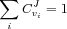
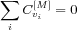

A very important property of steady-state metabolic systems was uncovered with the MCA formalism. This concerns the summation of all the flux control coefficients of a pathway. By various procedures [
Kacser73 Heinrich75 Giersch88 Reder88] it can be demonstrated that for a given reference flux the sum of all flux-control coefficients (of all steps) is equal to unity:

For a given reference species concentration the sum of all concentration-control coefficients is zero:

where the summations are over all the steps of the system.
According to the first summation theorem, increases in some of the flux-control coefficients imply decreases in the others so that the total remains unity. As a consequence of the summation theorems, one concludes that the control coefficients are global properties and that in metabolic systems, control is a systemic property, dependent on all of the system's elements (steps).